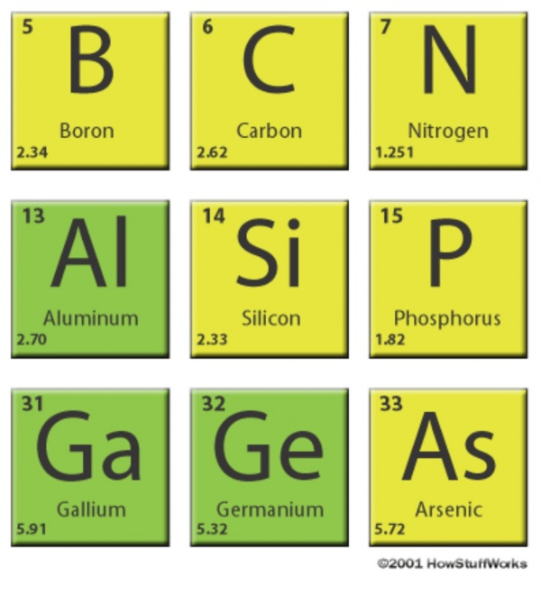
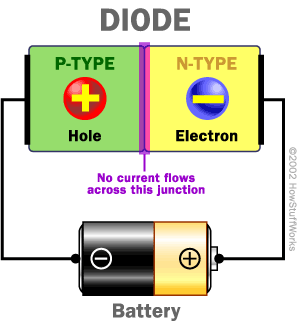
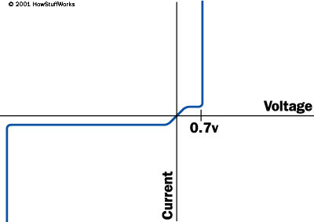

How Semiconductor Work......?

Semiconductors have had a monumental impact on our society. You find semiconductors at the heart of microprocessor chips as well as transistors. Anything that's computerized or uses radio waves depends on semiconductors. Today, most semiconductor chips and transistors are created with silicon. You may have heard expressions like "Silicon Valley" and the "silicon economy," and that's why -- silicon is the heart of any electronic device. A diode is the simplest possible semiconductor device, and is therefore an excellent beginning point if you want to understand how semiconductors work. In this article, you'll learn what a semiconductor is, how doping works and how a diode can be created using semiconductors. But first, let's take a close look at silicon. Silicon is a very common element -- for example, it is the main element in sand and quartz. If you look "silicon" up in the periodic table, you will find that it sits next to aluminum, below carbon and above germanium.
Silicon sits next to aluminum and below carbon in the periodic table.

In a silicon lattice, all silicon atoms bond perfectly to four neighbors, leaving no free electrons to conduct electric current. This makes a silicon crystal an insulator rather than a conductor.
Carbon, silicon and germanium (germanium, like silicon, is also a semiconductor) have a unique property in their electron structure -- each has four electrons in its outer orbital. This allows them to form nice crystals. The four electrons form perfect covalent bonds with four neighboring atoms, creating a lattice. In carbon, we know the crystalline form as diamond. In silicon, the crystalline form is a silvery, metallic-looking substance. In a silicon lattice, all silicon atoms bond perfectly to four neighbors, leaving no free electrons to conduct electric current. This makes a silicon crystal an insulator rather than a conductor. In a silicon lattice, all silicon atoms bond perfectly to four neighbors, leaving no free electrons to conduct electric current. This makes a silicon crystal an insulator rather than a conductor. Metals tend to be good conductors of electricity because they usually have "free electrons" that can move easily between atoms, and electricity involves the flow of electrons. While silicon crystals look metallic, they are not, in fact, metals. All of the outer electrons in a silicon crystal are involved in perfect covalent bonds, so they can't move around. A pure silicon crystal is nearly an insulator -- very little electricity will flow through it. But you can change all this through a process called doping.
Doping silicon
You can change the behavior of silicon and turn it into a conductor by doping it. In doping, you mix a small amount of an impurity into the silicon crystal.
N-type
In N-type doping, phosphorus or arsenic is added to the silicon in small quantities. Phosphorus and arsenic each have five outer electrons, so they're out of place when they get into the silicon lattice. The fifth electron has nothing to bond to, so it's free to move around. It takes only a very small quantity of the impurity to create enough free electrons to allow an electric current to flow through the silicon. N-type silicon is a good conductor. Electrons have a negative charge, hence the name N-type
P-type
In P-type doping, boron or gallium is the dopant. Boron and gallium each have only three outer electrons. When mixed into the silicon lattice, they form "holes" in the lattice where a silicon electron has nothing to bond to. The absence of an electron creates the effect of a positive charge, hence the name P-type. Holes can conduct current. A hole happily accepts an electron from a neighbor, moving the hole over a space. P-type silicon is a good conductor.
When you put N-type and P-type silicon together as shown in this diagram, you get a very interesting phenomenon that gives a diode its unique properties. Even though N-type silicon by itself is a conductor, and P-type silicon by itself is also a conductor, the combination shown in the diagram does not conduct any electricity. The negative electrons in the N-type silicon get attracted to the positive terminal of the battery. The positive holes in the P-type silicon get attracted to the negative terminal of the battery. No current flows across the junction because the holes and the electrons are each moving in the wrong direction. If you flip the battery around, the diode conducts electricity just fine. The free electrons in the N-type silicon are repelled by the negative terminal of the battery. The holes in the P-type silicon are repelled by the positive terminal. At the junction between the N-type and P-type silicon, holes and free electrons meet. The electrons fill the holes. Those holes and free electrons cease to exist, and new holes and electrons spring up to take their place. The effect is that current flows through the junction.
Diodes and Transistors
A device that blocks current in one direction while letting current flow in another direction is called a diode. Diodes can be used in a number of ways. For example, a device that uses batteries often contains a diode that protects the device if you insert the batteries backward. The diode simply blocks any current from leaving the battery if it is reversed -- this protects the sensitive electronics in the device. When reverse-biased, an ideal diode would block all current. A real diode lets perhaps 10 microamps through -- not a lot, but still not perfect. And if you apply enough reverse voltage (V), the junction breaks down and lets current through. Usually, the breakdown voltage is a lot more voltage than the circuit will ever see, so it is irrelevant. When forward-biased, there is a small amount of voltage necessary to get the diode going. In silicon, this voltage is about 0.7 volts. This voltage is needed to start the hole-electron combination process at the junction. Another monumental technology that's related to the diode is the transistor. Transistors and diodes have a lot in common.
Transistor
A transistor is created by using three layers rather than the two layers used in a diode. You can create either an NPN or a PNP sandwich. A transistor can act as a switch or an amplifier. A transistor looks like two diodes back-to-back. You'd imagine that no current could flow through a transistor because back-to-back diodes would block current both ways. And this is true. However, when you apply a small current to the center layer of the sandwich, a much larger current can flow through the sandwich as a whole. This gives a transistor its switching behavior. A small current can turn a larger current on and off. A silicon chip is a piece of silicon that can hold thousands of transistors. With transistors acting as switches, you can create Boolean gates, and with Boolean gates you can create microprocessor chips. The natural progression from silicon to doped silicon to transistors to chips is what has made microprocessors and other electronic devices so inexpensive and ubiquitous in today's society. The fundamental principles are surprisingly simple. The miracle is the constant refinement of those principles to the point where, today, tens of millions of transistors can be inexpensively formed onto a single chip.